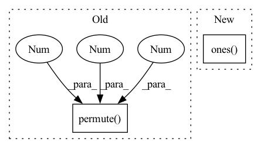

Pattern ID :27498

Before Change
)
upper_diag_ids = torch.nonzero(uppder_ones.view(-1), as_tuple=False).view(-1)
// flat_tensor: (batch_size, matrix_size * matrix_size, hidden_size)
flat_tensor = tensor.view(tensor.size(0), tensor.size(1), -1).permute(0, 2, 1)
tensor_upper = torch.index_select(flat_tensor, dim=1, index=upper_diag_ids)
return tensor_upper
def forward(self, seq_hiddens):
After Change
:return: (batch_size, matrix_size + ... + 1, hidden_size)
bs, matrix_size, matrix_size, hidden_size = tensor.shape
mask = torch.ones(matrix_size, matrix_size, device=tensor.device).triu().bool()[
None, :, :, None]
return tensor.masked_select(mask).reshape(bs, -1, hidden_size)
In pattern: SUPERPATTERN
Frequency: 3
Non-data size: 2
Instances
Fragment ID: 81603453
Project Name: junnyu/gplinker_pytorch
Commit Name: 646f478a00ca38cb2975716cba55ca2aee83b980
Time: 2022-02-28
Author: 573009727@qq.com
File Name: utils/components.py
M Class Name: HandshakingKernel
N Class Name: HandshakingKernel
M Method Name: upper_reg2seq(2)
N Method Name: upper_reg2seq(2)
M Parent Class: nn.Module
N Parent Class: nn.Module
M File Name: utils/components.py
N File Name: utils/components.py
M Start Line: 247
M End Line: 258
N Start Line: 247
N End Line: 250
'>
Before Change
attention_value, _ = self.temporal_attention(x, x, x)
attention_value = attention_value + x
attention_value = self.ff_self(attention_value) + attention_value
return attention_value.permute(0, 2, 1).view(bs, tz, self.channels, self.size, self.size)
class Encoder(nn.Module):
After Change
x = x.view(bs, tz, self.channels, self.size, self.size)
print(x.shape)
x = x.view(bs, tz, self.size*self.size, self.channels).permute(0, 2, 1, 3).view(bs*self.size*self.size, tz, self.channels) // bs x hz * wz x tz * cz
mask = torch.tril(torch.ones(tz, tz, dtype=torch.float32)) * -10000
x = self.temporal_transformer(x, mask=mask)
x = x.view(bs, self.size, self.size, tz, self.channels).permute(0, 3, 4, 1, 2)
return x
'>
Fragment ID: 81603455
Project Name: laion-ai/phenaki
Commit Name: 37d2f60e889cf6f791559a3cfd667db1f90268ac
Time: 2022-10-03
Author: 61938694+dome272@users.noreply.github.com
File Name: vivq.py
M Class Name: TemporalSpatialAttention
N Class Name: TemporalSpatialAttention
M Method Name: forward(2)
N Method Name: forward(2)
M Parent Class: nn.Module
N Parent Class: nn.Module
M File Name: vivq.py
N File Name: vivq.py
M Start Line: 24
M End Line: 34
N Start Line: 27
N End Line: 35
'>
Before Change
batch_size, _, matrix_size, vis_hidden_size = visible.size()
// mask lower triangle
upper_visible = (
visible.permute(0, 3, 1, 2).triu().permute(0, 2, 3, 1).contiguous()
)
// visible4lstm: (batch_size * matrix_size, matrix_size, hidden_size)
After Change
if "lstm" in self.shaking_type:
batch_size, _, matrix_size, vis_hidden_size = visible.shape
// mask lower triangle
mask = torch.ones(
matrix_size, matrix_size, device=seq_hiddens.device).tril(-1).bool()[None, :, :, None]
// visible4lstm: (batch_size * matrix_size, matrix_size, hidden_size)
visible4lstm = visible.masked_fill(mask, 0).flatten(0, 1)
'>
Fragment ID: 81603449
Project Name: junnyu/gplinker_pytorch
Commit Name: 646f478a00ca38cb2975716cba55ca2aee83b980
Time: 2022-02-28
Author: 573009727@qq.com
File Name: utils/components.py
M Class Name: HandshakingKernel
N Class Name: HandshakingKernel
M Method Name: forward(2)
N Method Name: forward(2)
M Parent Class: nn.Module
N Parent Class: nn.Module
M File Name: utils/components.py
N File Name: utils/components.py
M Start Line: 272
M End Line: 293
N Start Line: 264
N End Line: 284